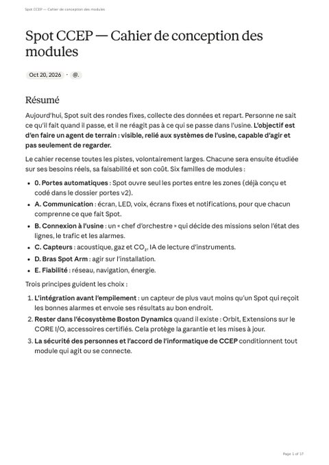

-
ZIP
ZIP
Logiciel complet spot_doors_v2
Firmware door_node 2.1.0, service porte-auto, simulateur de porte, 35 tests pytest. À dézipper ; mode d'emploi dans README.md.
-
INO
Arduino
Firmware de la carte de porte
Programme Arduino de l'ESP32-RELAY02 : Wi-Fi, jeton, impulsions K1 (ouverture) et K2 (fermeture).
-
JSON
JSON
Accès natif Spot, portes en automatique
Configuration de la fonction native d'ouverture des portes de Spot.
-
JSON
JSON
Journal d'un passage
Passage réel du code contre le simulateur : passage confirmé 5,1 s après l'impulsion.
-
JSON
JSON
Journal d'une fermeture commandée
Fermeture vue 6,1 s après l'impulsion K2.
-
PY
Python
Script : passage
Rejoue un passage contre le simulateur.
-
PY
Python
Script : fermeture
Rejoue une fermeture commandée contre le simulateur.
-

PDFCahier de conception des modules
Les modules envisagés pour Spot chez CCEP et la feuille de route (document du 20/10).